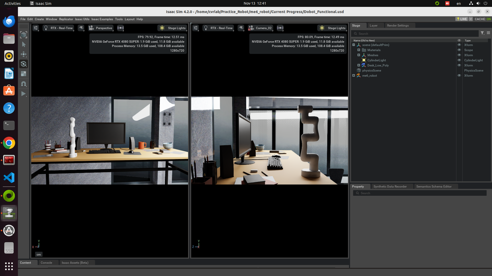

Featured Projects


Advanced robotics simulation project focused on automated food preparation. The system leverages IsaacSim for physics-based simulation and integrates with ROS2 for sophisticated robotic control. Implementation includes cutting-edge computer vision and LLM technologies for enhanced automation.
Key Features
- 6-DoF robotic manipulator with precise gripper control
- RT-DETR vision model implementation for accurate object detection
- LLM integration for advanced decision-making capabilities
- Real-time physics simulation using IsaacSim environment
- ROS2-based control system architecture